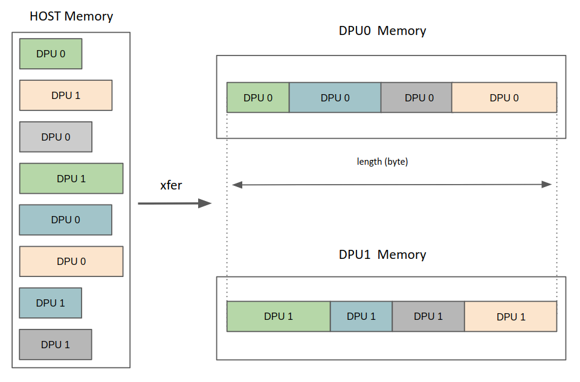
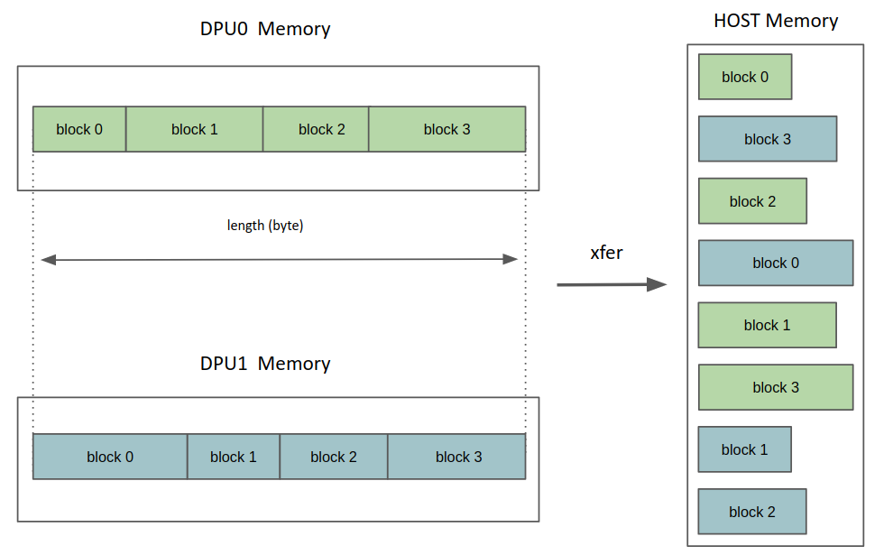

Scatter Gather Memory Transfer
In addition to the dpu_push_xfer function (cf Memory Interface), the C host API provides
the function dpu_push_sg_xfer to perform scatter/gather memory transfers between the host memory and the DPU
MRAM memory
dpu_error_t dpu_push_sg_xfer(struct dpu_set_t set,
dpu_xfer_t xfer,
const char *symbol_name,
uint32_t symbol_offset,
size_t length,
get_block_t *get_block_info,
dpu_sg_xfer_flags_t flags);
The direction of the transfer (to or from the DPUs) is set with the xfer argument.
Below is an illustration of the behavior of the function for each direction:
DPU_XFER_TO_DPUIn this case independent blocks of the host memory will be transferred and gathered into one block of the DPU memory.

DPU_XFER_FROM_DPUSymmetrically, in this case, one DPU memory block will be transferred and scattered into independent blocks of the host memory.



In the same way than for dpu_push_xfer, transfer options are specified with the flags argument. DPU_SG_XFER_DEFAULT
is equivalent to DPU_XFER_DEFAULT and DPU_SG_XFER_ASYNC is equivalent to DPU_XFER_ASYNC.
Although the function shares most of its interface with dpu_push_xfer, the host buffers are specified in a different way.
In the case of dpu_push_xfer, the dpu_prepare_xfer function allows to register explicitely a host memory address associated to each DPU.
In the case of dpu_push_sg_xfer, a utility function needs to be written, which returns for each DPU the address of the next block where to get or put the data. This function is passed to dpu_push_sg_xfer through the get_block_info argument (more details on this parameter are provided in the next section).
By default, it is expected that the utility function specifies a total number of bytes to gather to the DPU
or to scatter to the host equal to length, for all the DPUs. An error message is generated during the transfer if
this condition is not met, in order to detect potential errors in the logic that returns the block addresses.
The length check can also be disabled with the flag DPU_SG_XFER_DISABLE_LENGTH_CHECK. In this case, a special behavior is applied when the total size of buffers specified for a DPU is lower than the length argument’s value.
For a gather transfer (DPU_XFER_TO_DPU), the remaining MRAM bytes will be filled with zeros, as illustrated below

For a scatter transfer (DPU_XFER_FROM_DPU), only the first bytes are transferred from the DPU MRAM to the host (until the host buffers are full), and the remaining bytes in MRAM are ignored.
For both directions, the case of the total size for a DPU exceeding the length argument’s value is silently ignored (i.e., only the first length bytes are transfered, and no error is issued).
Host Buffers Interface
Compared to dpu_push_xfer, the dpu_push_sg_xfer function uses a different interface for specifying the host buffers.
The interface requires the user to provide a utility function which defines how to retrieve the scattered buffer’s addresses.
The function dpu_push_sg_xfer takes as input a parameter of type get_block_t, which is a structure containing the utility function and its arguments (context)
typedef struct get_block_t {
/** The get_block function */
get_block_func_t f;
/** User arguments for the get_block function */
void *args;
/** Size of the user arguments */
size_t args_size;
} get_block_t;
struct sg_block_info {
/** Starting address of the block */
uint8_t *addr;
/** Number of bytes to transfer for this block */
uint32_t length;
};
typedef bool (*get_block_func_t)(struct sg_block_info *out, uint32_t dpu_index, uint32_t block_index, void *args);
The function get_block_t.f is used internally by dpu_push_sg_xfer to access the buffer addresses where to store or get the data for the transfer.
More specifically, the function shall provide the host memory address and the length (in bytes) of one block at each call.
It takes as input the DPU index and the block index. The blocks associated with a DPU index are assumed to be linearly numbered from 0 to n-1, with n being the total number of blocks for the DPU. The utility function will be first called with a block index of 0 to retrieve the first block address. When the first block length is exceeded, the function is called with a block index of 1 to retrieve the next block, and so on. When the last block’s length is exceeded (block index of n-1), the function is called with a block index of n, and it shall return false. This indicates that no more blocks are available for the specified DPU. For all previous calls, the function should return true and provide the new block’s description in the out argument.
To prevent the SDK from accessing the user arguments in the get_block_t structure while the user is modifying them, the SDK will make a copy of the arguments in a temporary buffer.
The size of this buffer is specified in the get_block_t.args_size field. The user shall ensure that the size is large enough to contain the arguments.
If the size is not large enough, this will result in a buffer overflow.
Note: There is no guarantee as to the order in which get_block_t.f will be called, and the SDK may call it
multiple times in parallel threads. Therefore, the user must ensure that the function is thread-safe and reentrant.
Enabling scatter gather transfers
Scatter/gather transfers are disabled by default in the SDK, but can be enabled by adding sgXferEnable=true in the DPU profile.
By default, the maximal number of blocks that can be transferred for one DPU is
equal to the number of DPUs in the DPU set.
For instance, if a rank of 64 DPUs is allocated, the utility function in the dpu_push_sg_xfer call
shall not specify a number of blocks larger than 64 for any DPU.
If this limit is not sufficient for the application,
it can be changed by setting the variable sgXferMaxBlocksPerDpu in the DPU profile.
Increasing this value however increases the memory footprint of the SDK.
dpu_alloc(2048, "sgXferEnable=true, sgXferMaxBlocksPerDpu=3096", &dpu_set)
If the utility function specifies more than sgXferMaxBlocksPerDpu blocks per DPU,
an error message is generated.
Example
Suppose one wants to perform an in-place partition of a buffer such that all elements on the left are smaller than a given pivot, and all elements on the right are greater than the pivot. This partitioning is used for example in quicksort algorithms.
The following code performs this partitioning on a DPU:
#include <mram.h>
#define DPU_BUFFER_SIZE (1 << 6)
__host int pivot;
__host uint64_t metadata[2];
__mram_noinit uint32_t buffer[DPU_BUFFER_SIZE];
int main(void) {
/* load the data from MRAM */
uint32_t work_buffer[DPU_BUFFER_SIZE];
mram_read(&buffer, &work_buffer, DPU_BUFFER_SIZE * sizeof(uint32_t));
/* perform the pivot */
uint32_t i = 0;
uint32_t j = DPU_BUFFER_SIZE - 1;
while (i < j) {
while (i < DPU_BUFFER_SIZE - 1 && work_buffer[i] <= pivot) {
i++;
}
while (j > 0 && work_buffer[j] > pivot) {
j--;
}
if (i < j) {
uint32_t tmp = work_buffer[i];
work_buffer[i] = work_buffer[j];
work_buffer[j] = tmp;
}
}
/* store the metadata */
metadata[0] = i; /* length of left partition */
metadata[1] = DPU_BUFFER_SIZE - i; /* length of right partition */
/* store the data back to MRAM */
mram_write(&work_buffer, &buffer, DPU_BUFFER_SIZE * sizeof(uint32_t));
return 0;
}
Note that the code writes the length of the left and right partitions in the table metadata to be communicated to the host.
It can be used to distribute the partition of a buffer between multiple DPUs. The main function is:
int main() {
struct dpu_set_t set;
/* Generate random data */
int buffer[BUFFER_SIZE];
fill_random_buffer(buffer, BUFFER_SIZE);
int pivot = MAX_RANDOM / 2;
/* Initialize and run */
DPU_ASSERT(dpu_alloc(NB_DPUS, "sgXferEnable=true", &set));
DPU_ASSERT(dpu_load(set, DPU_BINARY, NULL));
populate_mram(set, buffer);
dpu_broadcast_to(set, "pivot", 0, &pivot, sizeof(pivot), DPU_XFER_DEFAULT);
DPU_ASSERT(dpu_launch(set, DPU_SYNCHRONOUS));
/* Retrieve metadata and compute length of the left partition. */
size_t **metadata = get_metadata(set, NB_DPUS);
size_t lower_length = get_left_length(metadata);
/* Compute where to store the incoming blocks. */
uint8_t ***block_addresses =
bidimensional_malloc(NB_DPUS, NB_BLOCKS, sizeof(uint8_t *));
compute_block_addresses(metadata, block_addresses, buffer, lower_length);
/* Retrieve the result. */
sg_xfer_context sc_args = {.metadata = metadata, .block_addresses = block_addresses};
get_block_t get_block_info = {.f = &get_block, .args = &sc_args, .args_size = sizeof(sc_args)};
DPU_ASSERT(dpu_push_sg_xfer(set, DPU_XFER_FROM_DPU, "buffer", 0,
BUFFER_SIZE / NB_DPUS * sizeof(int),
&get_block_info, DPU_SG_XFER_DEFAULT));
/* Validate the results. */
validate_partition(pivot, buffer, lower_length);
bidimensional_free(metadata, NB_DPUS);
bidimensional_free(block_addresses, NB_DPUS);
DPU_ASSERT(dpu_free(set));
return 0;
}
auto main() -> int {
try {
using T = int;
/* Generate random data */
auto buffer = generate_random_vector<T>(BUFFER_SIZE);
std::vector<T> pivot{MAX_RANDOM<T> / 2};
/* Initialize and run */
auto dpuSet = DpuSet::allocate(NB_DPUS, "sgXferEnable=true");
dpuSet.load(DPU_BINARY);
populate_mram(dpuSet, buffer);
dpuSet.copy("pivot", pivot);
dpuSet.exec();
/* Retrieve metadata and compute length of the left partition. */
auto metadata = get_metadata(dpuSet);
auto lower_length = get_left_length(metadata);
/* Compute the addresses of inbound blocks in the output buffer. */
auto block_addresses =
compute_block_addresses(metadata, buffer, lower_length);
/* Retrieve the result. */
sg_xfer_context sc_args{metadata, block_addresses};
get_block_t get_block_info{get_block<T>, &sc_args, sizeof(sc_args)};
dpuSet.copyScatterGather(get_block_info, BUFFER_SIZE / NB_DPUS * sizeof(T),
"buffer");
/* Validate the result. */
validate_partition(pivot[0], buffer, lower_length);
} catch (const DpuError &e) {
std::cerr << e.what() << std::endl;
}
return 0;
}
auto main() -> int {
try {
using T = int;
/* Generate random data */
auto buffer = generate_random_vector<T>(BUFFER_SIZE);
std::vector<T> pivot{MAX_RANDOM<T> / 2};
/* Initialize and run */
auto dpuSet = DpuSet::allocate(NB_DPUS, "sgXferEnable=true");
dpuSet.load(DPU_BINARY);
populate_mram(dpuSet, buffer);
dpuSet.copy("pivot", pivot);
dpuSet.exec();
/* Retrieve metadata and compute length of the left partition. */
auto metadata = get_metadata(dpuSet);
auto lower_length = get_left_length(metadata);
/* Compute the addresses of inbound blocks in the output buffer. */
auto block_addresses =
compute_block_addresses(metadata, buffer, lower_length);
/* Retrieve the result. */
auto get_block = [&metadata, &block_addresses](struct sg_block_info *out,
uint32_t dpu_index,
uint32_t block_index) {
if (block_index >= NB_BLOCKS) {
return false;
}
/* Set the output block */
out->length = metadata[dpu_index][block_index] * sizeof(T);
out->addr = block_addresses[dpu_index][block_index];
return true;
};
dpuSet.copyScatterGather(get_block, BUFFER_SIZE / NB_DPUS * sizeof(T),
"buffer");
/* Validate the result. */
validate_partition(pivot[0], buffer, lower_length);
} catch (const DpuError &e) {
std::cerr << e.what() << std::endl;
}
return 0;
}
The function get_block is used to prepare the buffers to be transferred to the DPUs.
First, we define a structure sg_xfer_context that contains the execution context of get_block:
/* User structure that stores the get_block function arguments */
typedef struct sg_xfer_context {
size_t **metadata; /* [in] array of block lengths */
uint8_t ***block_addresses; /* [in] indexes to store the next block */
} sg_xfer_context;
/* User structure that stores the get_block function arguments */
struct sg_xfer_context {
const std::vector<std::vector<size_t>>
&metadata; /* [in] array of block lengths */
const std::vector<std::vector<uint8_t *>>
&block_addresses; /* [in] array of
block addresses */
};
There is no need for a capturing structure in this case.
get_block is defined as follows:
/* Callback function that returns the block information for a given DPU and
* block index. */
bool get_block(struct sg_block_info *out, uint32_t dpu_index,
uint32_t block_index, void *args) {
if (block_index >= NB_BLOCKS) {
return false;
}
/* Unpack the arguments */
sg_xfer_context *sc_args = (sg_xfer_context *)args;
size_t **metadata = sc_args->metadata;
size_t length = metadata[dpu_index][block_index];
uint8_t ***block_addresses = sc_args->block_addresses;
/* Set the output block */
out->length = length * sizeof(int);
out->addr = block_addresses[dpu_index][block_index];
return true;
}
/* Callback function that returns the block information for a given DPU and
* block index. */
template <typename T>
static auto get_block(struct sg_block_info *out, uint32_t dpu_index,
uint32_t block_index, void *args) {
if (block_index >= NB_BLOCKS) {
return false;
}
/* Unpack the arguments */
auto *sc_args = reinterpret_cast<sg_xfer_context *>(args);
auto length = sc_args->metadata[dpu_index][block_index];
/* Set the output block */
out->length = length * sizeof(T);
out->addr = sc_args->block_addresses[dpu_index][block_index];
return true;
}
In this case the callback is defined as a lambda in the main function.
The full code can be found here: Pivot Partitioning Complete Source Code.
Performance
The following remark does not apply to scatter/gather transfers from the host to the DPUs.
The scatter gather transfer is an efficient way to transfer data between the host and the DPUs.
However, when transferring data from the DPUs to the host, special care must be taken to avoid a slowdown due to cache invalidations
If the length of a partition is small compared to the size of a cache line on the host (64 bytes on x86), and partitions from multiple DPUs are to be written in adjacent memory locations, the host will invalidate cache lines multiple times, which can be very costly.
The problem can be solved by writing the partitions in a non-regular pattern.
For example, consider the following get_block function and its context, used in the example above:
typedef struct sg_xfer_context {
size_t **metadata; /* [in] array of block lengths */
uint8_t ***block_addresses; /* [in] indexes to store the next block */
} sg_xfer_context;
bool get_block(struct sg_block_info *out, uint32_t dpu_index,
uint32_t block_index, void *args) {
if (block_index >= NB_BLOCKS) {
return false;
}
/* Unpack the arguments */
sg_xfer_context *sc_args = (sg_xfer_context *)args;
size_t **metadata = sc_args->metadata;
uint8_t ***block_addresses = sc_args->block_addresses;
/* Set the output block */
size_t length = metadata[dpu_index][block_index];
out->length = length * sizeof(int);
out->addr = block_addresses[dpu_index][block_index];
return true;
}
The get_block function is called by the SDK to get the address and length of each block.
The transfers are executed from all DPUs in parallel, in order of ascending block_index.
This scheme will cause cache invalidations, because all DPUs will write their block 0 to adjacent memory locations at the same time, then block 1, etc.
It can be rewritten to avoid this, assuming you have generated an array offsets[dpu_index] of random block offsets for each DPU:
typedef struct sg_xfer_context {
size_t **metadata; /* [in] array of block lengths */
uint8_t ***block_addresses; /* [in] indexes to store the next block */
size_t *offsets; /* [in] random offsets for each DPU */
} sg_xfer_context;
bool get_block(struct sg_block_info *out, uint32_t dpu_index,
uint32_t block_index, void *args) {
if (block_index >= NB_BLOCKS) {
return false;
}
/* Unpack the arguments */
sg_xfer_context *sc_args = (sg_xfer_context *)args;
size_t **metadata = sc_args->metadata;
uint8_t ***block_addresses = sc_args->block_addresses;
size_t *offsets = sc_args->offsets;
/* Offset index */
block_index = (block_index + offsets[dpu_index]) % NB_BLOCKS;
/* Set the output block */
size_t length = metadata[dpu_index][block_index];
out->length = length * sizeof(int);
out->addr = block_addresses[dpu_index][block_index];
return true;
}
This assumes you also transfer the parameter offset corresponding to each DPU and adapt the DPU code by offsetting its output buffer.
The reason for doing this (rather than simply reading the DPUs memory with an offset) is that the MRAM of all DPUs can only be accessed uniformly by the host.
Schematically, the DPU code will look like this:
#include <mram.h>
__host uint32_t offset;
__mram_noinit int *output_buffer;
int main(void) {
/* Perfom computations */
...
/* Results are stored in `result`
and their length in `result_length` */
/* Write the result to the output buffer, with an offset */
int result_store_index = 0;
for(int result_block = 0; result_block < NR_BLOCKS; result_block++) {
int offset_index = (result_block + offset) % NR_BLOCKS;
mram_write(&output_buffer[result_store_index],
&result[offset_index],
result_length[offset_index]);
result_store_index += result_length[offset_index];
}
return 0;
}